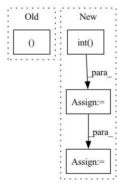

Pattern ID :26180
Before Change
blocks = ((L*k)//threads) + C + 1
query_map = torch.ones((N, H, blocks), dtype=torch.int32).cuda() * L
blocks_map = torch.ones((N, H, blocks), dtype=torch.int32).cuda() * -1
_, sorted_group_indices = torch.sort(groups, descending=True, dim=-1)
// Actually perform the dot product
ClusteredSparseDotProduct.dot[device.type](After Change
with torch.no_grad():
Q_pb = 16
block_counts = (counts + Q_pb - 1) // Q_pb
block_counts = block_counts.int()
block_counts_cumsum = block_counts.view(-1).cumsum(-1).view(N, H, C).int()
indx_maps = torch.ones(
(block_counts.sum(), 4),
device=Q.device,
dtype=torch.int32
)
counts_cumsum = counts.cumsum(-1).int()
total_blocks = block_counts.sum().item()
// Actually perform the dot product
ClusteredSparseDotProduct.dot[device.type](In pattern: SUPERPATTERN
Frequency: 4
Non-data size: 4
Instances Fragment ID: 78888819
Project Name: idiap/fast-transformers
Commit Name: ac1fd6316f59b56faa3b4e9236810d4e97ed5b15
Time: 2020-11-25
Author: avyas@idiap.ch
File Name: fast_transformers/sparse_product/__init__.py
M Class Name: ClusteredSparseDotProduct
N Class Name: ClusteredSparseDotProduct
M Method Name: forward(7)
N Method Name: forward(7)
M Parent Class: torch.autograd.Function
N Parent Class: torch.autograd.Function
M File Name: fast_transformers/sparse_product/__init__.py
N File Name: fast_transformers/sparse_product/__init__.py
M Start Line: 185
M End Line: 201
N Start Line: 164
N End Line: 208
Before Change
union = (
(y_pred[i, j, :, :].unsqueeze(0) | y_true[i, j, :, :].unsqueeze(0))
.float()
.sum((1, 2 ))
)
self.iou_per_class[j] += ((intersection + 1e-15) / (union + 1e-15))[0]
After Change
y_true_local = y_true[i, j, :, :].unsqueeze(0)
intersection = (y_pred_local & y_true_local).float().sum()
union = (y_pred_local | y_true_local).float().sum()
correct = (y_pred_local == y_true_local).int() .sum()
total = y_true_local.numel()
trues = y_pred_local.float().sum() + y_true_local.float().sum()
self.iou_per_class[j] += 1 if union == 0 else (intersection / union)
self.f1_score_per_class[j] += (
1 if trues == 0 else (2 * intersection / trues)
)
self.pixel_accuracy_per_class[j] += correct / total
def reset(self):
Reset the metrics Fragment ID: 78888787
Project Name: biasvariancelabs/aitlas
Commit Name: e11bf3d1eaac800ad330870791cd1f5e251967bd
Time: 2021-09-17
Author: ivan.kitanovski@gmail.com
File Name: aitlas/base/metrics.py
M Class Name: SegmentationRunningScore
N Class Name: SegmentationRunningScore
M Method Name: update(3)
N Method Name: update(3)
M Parent Class: RunningScore
N Parent Class: RunningScore
M File Name: aitlas/base/metrics.py
N File Name: aitlas/base/metrics.py
M Start Line: 248
M End Line: 260
N Start Line: 256
N End Line: 269
Before Change
pred_classif[pos_mask] += 3.0
//// for classification //////
(best_truth_overlap, best_truth_idx ) = reg_overlaps.max(dim=0)
overlap_t[idx] = best_truth_overlap // [num_priors] jaccord for each prior
conf_t[idx] = labels[best_truth_idx] // [num_priors] top class label for each prior
//// for regression //////After Change
).clamp_(max=1)
qualities[qualities != qualities.max(dim=0, keepdim=True)[0]] = 0.0
for quality in qualities:
num_pos = max(1, torch.topk(quality, topk, largest=True)[0].sum().int() )
num_pos = min(num_pos, (quality > 0).sum())
pos_mask = torch.topk(quality, num_pos, largest=True)[1]
quality[pos_mask] += 3.0
(best_truth_overlap, best_truth_idx) = qualities.max(dim=0) Fragment ID: 78888798
Project Name: zhangheng19931123/mutualguide
Commit Name: e34b6b0002f1571fad0fa9bf00707f377f5fc431
Time: 2022-07-01
Author: zhanghengdev@outlook.com
File Name: utils/box/box_utils.py
M Class Name: AnonimousClass
N Class Name: AnonimousClass
M Method Name: mutual_match(12)
N Method Name: mutual_match(12)
M Parent Class:
N Parent Class:
M File Name: utils/box/box_utils.py
N File Name: utils/box/box_utils.py
M Start Line: 79
M End Line: 99
N Start Line: 97
N End Line: 118